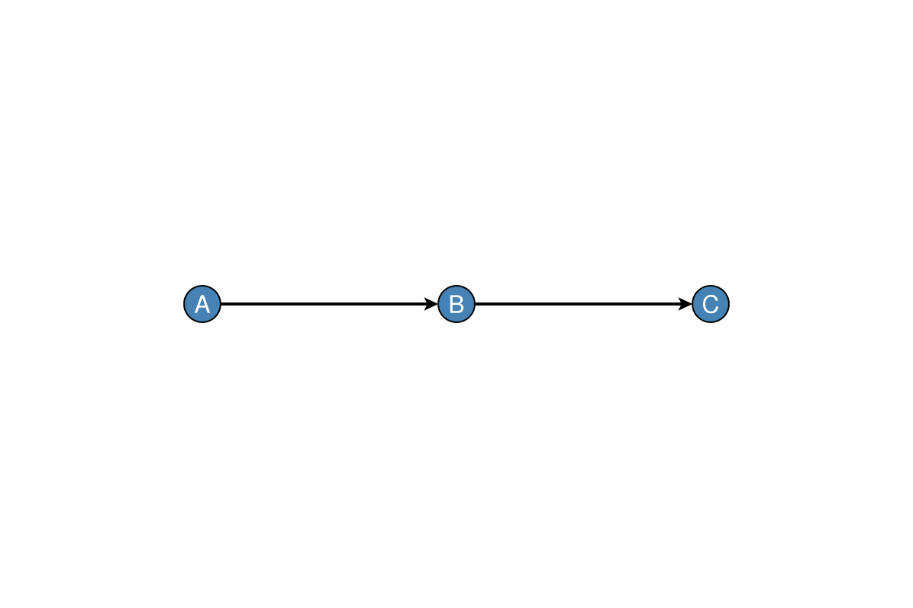
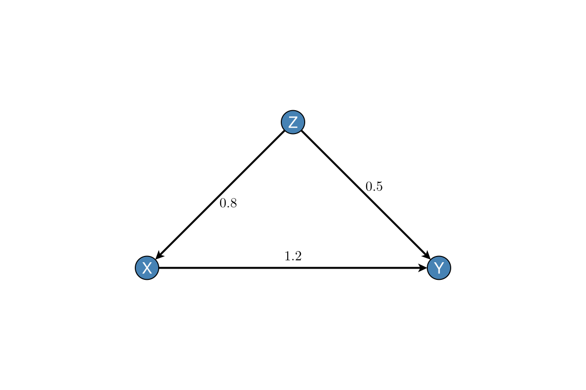
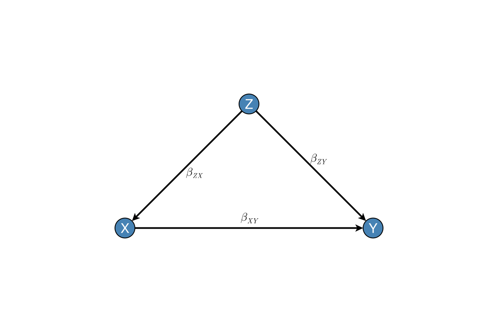
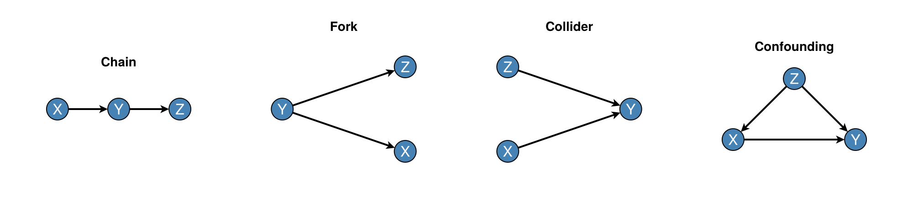
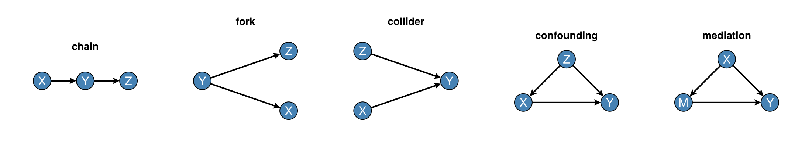
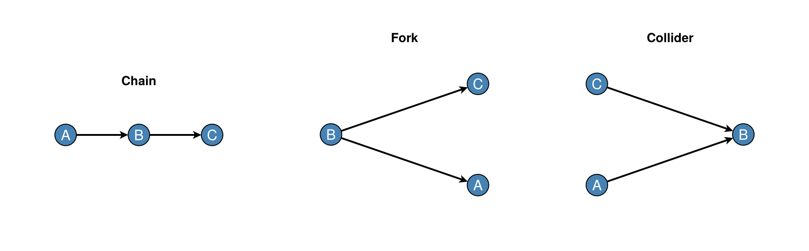

Getting Started
Prerequisites
DAGMakie requires a Makie backend. CairoMakie is typical for static figures:
using Pkg
Pkg.add("CairoMakie")
Pkg.add("Graphs")A chain DAG
using Graphs, DAGMakie, CairoMakie
# Create a simple chain: A → B → C
g = SimpleDiGraph(3)
add_edge!(g, 1, 2)
add_edge!(g, 2, 3)
# Plot with labels
fig, ax, p = dagplot(g, nlabels=["A", "B", "C"])
fig
dagplot returns:
fig: theFigureax: theAxisp: theGraphPlot(node positions and plot attributes)
Edge labels (structural parameters)
GraphMakie elabels pass through dagplot. Prefer structural_edge_labels so labels follow Graphs.edges(g) order and optional LaTeX maths (path coefficients or short mechanism fragments):
g_w, labels_w = confounding_graph(["Z", "X", "Y"])
# B[i,j] = structural weight on j → i
B = [
0.0 0.0 0.0;
0.8 0.0 0.0;
0.5 1.2 0.0;
]
fig, ax, p = dagplot(g_w;
nlabels = labels_w,
elabels = structural_edge_labels(g_w, B; digits = 1),
elabels_fontsize = 14,
elabels_distance = 12,
elabels_rotation = 0,
padding = 0.45,
)
fig
Symbolic TeX on the same topology:
fig, ax, p = dagplot(g_w;
nlabels = labels_w,
elabels = structural_edge_labels(
g_w,
["\\beta_{ZX}", "\\beta_{ZY}", "\\beta_{XY}"];
latex = true,
),
elabels_fontsize = 14,
elabels_distance = 12,
elabels_rotation = 0,
padding = 0.45,
)
fig
See Basic plotting for more elabels_* options.
Saving figures
save("my_dag.png", fig) # PNG
save("my_dag.pdf", fig) # PDF (vector)
save("my_dag.svg", fig) # SVG (vector)Common patterns
Convenience constructors for frequent causal structures:
fig = Figure(size = (1000, 220))
ax1 = Axis(fig[1, 1], title = "Chain")
ax2 = Axis(fig[1, 2], title = "Fork")
ax3 = Axis(fig[1, 3], title = "Collider")
ax4 = Axis(fig[1, 4], title = "Confounding")
g_chain, _ = chain_graph(["X", "Y", "Z"])
g_fork, _ = fork_graph(["X", "Y", "Z"])
g_collider, _ = collider_graph(["X", "Y", "Z"])
g_conf, _ = confounding_graph(["Z", "X", "Y"])
dagplot!(ax1, g_chain, nlabels = ["X", "Y", "Z"])
dagplot!(ax2, g_fork, nlabels = ["X", "Y", "Z"])
dagplot!(ax3, g_collider, nlabels = ["X", "Y", "Z"])
# Triangle layout is applied automatically for the Z→X→Y, Z→Y pattern
dagplot!(ax4, g_conf, nlabels = ["Z", "X", "Y"])
fig
Each pattern also has a one-liner (dagplot_chain, dagplot_fork, …). Composed into one figure:
fig = Figure(size = (1100, 200))
ax1 = Axis(fig[1, 1], title = "chain")
ax2 = Axis(fig[1, 2], title = "fork")
ax3 = Axis(fig[1, 3], title = "collider")
ax4 = Axis(fig[1, 4], title = "confounding")
ax5 = Axis(fig[1, 5], title = "mediation")
g_chain, _ = chain_graph(["X", "Y", "Z"])
g_fork, _ = fork_graph(["X", "Y", "Z"])
g_collider, _ = collider_graph(["X", "Y", "Z"])
g_conf, _ = confounding_graph(["Z", "X", "Y"])
g_med, _ = mediation_graph(["X", "M", "Y"])
dagplot!(ax1, g_chain; nlabels = ["X", "Y", "Z"])
dagplot!(ax2, g_fork; nlabels = ["X", "Y", "Z"])
dagplot!(ax3, g_collider; nlabels = ["X", "Y", "Z"])
dagplot!(ax4, g_conf; nlabels = ["Z", "X", "Y"])
dagplot!(ax5, g_med; nlabels = ["X", "M", "Y"])
fig
Stand-alone one-liners return (fig, ax, p):
fig, ax, p = dagplot_chain(["X", "Y", "Z"])
fig, ax, p = dagplot_fork(["X", "Y", "Z"])
fig, ax, p = dagplot_collider(["X", "Y", "Z"])
fig, ax, p = dagplot_confounding(["Z", "X", "Y"])
fig, ax, p = dagplot_mediation(["X", "M", "Y"])Confounding, mediation, and mixed-graph helpers (dagplot_frontdoor, dagplot_iv_confounded, etc.) use fixed triangle layouts by default so shortcut and bidirected edges remain visible. Pass layout=... to override.
Multiple DAGs in one figure
fig = Figure(size = (900, 280))
ax1 = Axis(fig[1, 1], title = "Chain")
ax2 = Axis(fig[1, 2], title = "Fork")
ax3 = Axis(fig[1, 3], title = "Collider")
g_chain, _ = chain_graph(["A", "B", "C"])
g_fork, _ = fork_graph(["A", "B", "C"])
g_collider, _ = collider_graph(["A", "B", "C"])
dagplot!(ax1, g_chain, nlabels = ["A", "B", "C"])
dagplot!(ax2, g_fork, nlabels = ["A", "B", "C"])
dagplot!(ax3, g_collider, nlabels = ["A", "B", "C"])
fig
See also
- Basic Plotting — node and edge appearance
- Node Types & Styling — semantic node types
- Visual Grammar — IDAGs, SWIGs, modifier edges
- Skeletons & Time — CPDAG skeletons and time grids
- Causal Analysis — d-separation, adjustment sets, and dagitty-style
smartcolouring